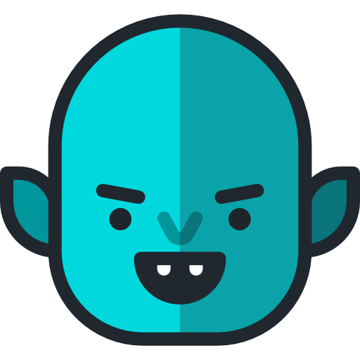

Команда официально объявила срез базы данных. Балансы заморожены. Ожидается открытие окна Claim в течение 72 часов. Обязательно обновите расширение до версии 4.2.1.
Торговые пары GRASS/USDT станут доступны сразу после клейма. Также запущен Launchpool для холдеров BIT, где можно застейкать активы для получения бесплатных токенов Grass.
Введен временный х2 коэффициент для узлов Африки и Ближнего Востока. Пользователи из Европы сообщают о снижении доходности в Epoch №145, но общий объем данных вырос на 30%.

Появилась первая утилита для мониторинга баланса очков прямо в Telegram. Напоминаем: никогда не вводите сид-фразу в ботов, используйте только Public Key вашего кошелька.
Поделитесь ей с друзьями, чтобы получать бонусы за их регистрацию: